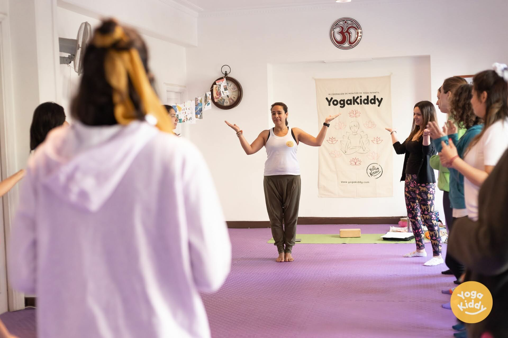

Nuestra última formación, dedicada a la enseñanza de yoga para niños, ¡fue un gran éxito! La formación de fin de semana completo, que tuvo lugar en el transcurso de 2 días (18 horas en total) en Santiago de Chile, contó con la participación de un grupo de mujeres entusiastas que estaban ansiosas por aprender acerca de las técnicas para practicar yoga con niños de una manera entretenida y atractiva.

A lo largo de la formación, las participantes fueron introducidas a una variedad de posturas y ejercicios de yoga que están diseñados específicamente para los niños. Aprendieron a adaptar estas posturas a las necesidades y capacidades de los distintos grupos de edad y a hacer la práctica divertida y atractiva para niños de todas las edades.

Los participantes también recibieron orientación sobre cómo crear planes de clases, establecer metas y objetivos para sus clases y cómo manejar situaciones difíciles que puedan surgir durante una clase.

La formación fue muy interactiva e incluyó mucha práctica. Los participantes tuvieron la oportunidad de impartir mini clases de yoga entre ellos, lo que les permitió poner en práctica sus nuevos conocimientos y habilidades en un entorno de apoyo y seguridad.

Las reacciones de los participantes fueron abrumadoramente positivas. Afirmaron sentirse más seguros y bien equipados para enseñar yoga a los niños tras completar la formación. También destacaron lo mucho que habían disfrutado de la experiencia y lo mucho que habían aprendido de sus compañeros.

En conclusión, ¡nuestra última formación sobre la enseñanza del yoga a los niños fue un gran éxito! Las mujeres que participaron en la formación se sintieron bien preparadas, seguras de sí mismas y con ganas de empezar a enseñar yoga a los niños. Adquirieron las habilidades y conocimientos necesarios para compartir los beneficios del yoga de una manera entretenida y atractiva, y para crear un ambiente seguro y divertido para que los niños aprendan y practiquen yoga. Creemos que esta formación tiene el potencial de influir positivamente en la salud, el desarrollo y el bienestar de los niños, y esperamos tener la oportunidad de ofrecerla de nuevo en el futuro.